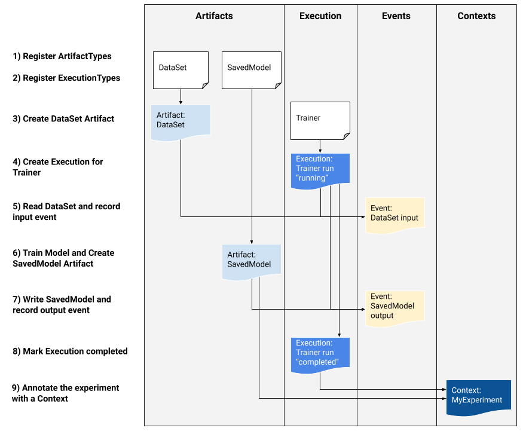

Metadata Store¶
Introduction¶
Metadata in machine learning (ML) is the data that includes information such as the creator of different model versions, the time they are created, the training data, parameters, and the place and performance metrics of each version of a model. It is created in each phase of the ML lifecycle, and also provides information about the environment in which an ML model is built. From the data extraction to the model monitoring phase, all ML-related processes create specific metadata. For example, the initial part of the ML lifecycle includes metadata regarding the location, name, and version of the dataset; the model training phase includes metadata regarding hyperparameters and evaluation metrics.
ML Metadata (MLMD) is a library for recording and retrieving metadata associated with ML engineers and data scientist workflows. MLMD is an integral part of TensorFlow Extended (TFX), but is designed so that it can be used independently.
Every run of a production ML pipeline generates metadata containing information about the various pipeline components, their executions (e.g. training runs), and resulting artifacts (e.g. trained models). In the event of unexpected pipeline behavior or errors, this metadata can be leveraged to analyze the lineage of pipeline components and debug issues. Think of this metadata as the equivalent of logs in software systems.
Note
Details and screenshots on how to create pipelines from YAML file and how to create experiments and runs are included in ML Pipelines.
MLMD helps you understand and analyze all the interconnected parts of your ML pipelines instead of analyzing them in isolation and can help you answer questions about your ML pipelines such as:
Which dataset was the model trained on?
What were the hyperparameters used to train the model?
Which pipeline run created the model?
Which training run led to this model?
When was the failed model pushed?
Below diagram shows a high-level overview of the various components of MLMD.

For more detailed information about how MLMD works, please refer to its source code.
Get started¶
On your Kubeflow on vSphere Dashboard UI, navigate to Notebooks, and connect to a Notebook Server. Create a notebook (.ipynb file) to hold and execute
the Python codes given in the rest of this section.
Install MLMD library¶
Let’s start from installing MLMD library. There are three ways to do so.
Install from PyPI¶
The general recommended way to install ML Metadata is to use the PyPI package:
pip install ml-metadata
Install with Docker¶
This is the recommended way to build ML Metadata under Linux.
Please first install docker and docker-compose following the directions: docker;
docker-compose.
Then, run the following at the project root:
DOCKER_SERVICE=manylinux-python${PY_VERSION}
sudo docker-compose build ${DOCKER_SERVICE}
sudo docker-compose run ${DOCKER_SERVICE}
where PY_VERSION is one of {37, 38, 39}.
A wheel is generated under dist/, and installed as follows:
pip install dist/*.whl
Install from source¶
If you prefer to install MLMD from source, refer to its github for detailed instruction.
After installation, you can import the package in your notebook.
from ml_metadata import metadata_store
from ml_metadata.proto import metadata_store_pb2
Configure Metadata Store connection¶
After installing and importing MLMD, you need to configure the Metadata Store connection.
An ML Metadata Store is a centralized structure for storing the metadata of ML models. MLMD registers the following types of metadata in the Metadata Store database:
Metadata about the artifacts created through the components/steps of your ML pipelines;
Metadata about the executions of these components/steps;
Metadata about pipelines and associated lineage information.
The Metadata Store provides APIs to record and retrieve metadata to and from the storage backend. The storage backend is pluggable and can be extended. MLMD provides reference implementations for SQLite (which supports in memory and on disk storage) and MySQL out of the box.
The MetadataStore object receives a connection configuration that corresponds to the storage backend used.
There are three general options to configure storage connection.
Important
This section uses Fake Database.
Fake Database (used in this section)¶
Fake Database provides an in-memory DB (using SQLite) for fast experimentation and local runs. The database is deleted when the store object is destroyed.
In your notebook, run below codes to connect your Metadata Store to a Fake Database:
connection_config = metadata_store_pb2.ConnectionConfig()
connection_config.fake_database.SetInParent() # Sets an empty fake database proto.
store = metadata_store.MetadataStore(connection_config)
SQLite¶
SQLite reads and writes files on disk.
connection_config = metadata_store_pb2.ConnectionConfig()
connection_config.sqlite.filename_uri = '...'
connection_config.sqlite.connection_mode = 3 # READWRITE_OPENCREATE
store = metadata_store.MetadataStore(connection_config)
MySQL¶
MySQL connects to a MySQL server.
connection_config = metadata_store_pb2.ConnectionConfig()
connection_config.mysql.host = '...'
connection_config.mysql.port = '...'
connection_config.mysql.database = '...'
connection_config.mysql.user = '...'
connection_config.mysql.password = '...'
store = metadata_store.MetadataStore(connection_config)
Integrate MLMD with ML Workflow¶
In this section, we introduce you some basic concepts and understandings of MLMD usage by going through an example. We use a typical ML workflow to show you how to use the low-level MLMD APIs to track the execution of a training task.
The following graph shows the overall workflow.
To record and retrieve metadata of the workflow to and from the storage backend, the Metadata Store uses the following data model:
Data Model |
Usage |
|---|---|
ArtifactType |
Describe an artifact’s type and its properties that are stored in the metadata store. You can register these types on-the-fly with the metadata store in code, or you can load them in the store from a serialized format. Once you register a type, its definition is available throughout the lifetime of the store. |
Artifact |
Describe a specific instance of an |
ExecutionType |
Describe a type of component or step in a workflow, and its runtime parameters. |
Execution |
A record of a component run or a step in an ML workflow and the runtime parameters. An |
Event |
A record of the relationship between |
ContextType |
Describe a type of conceptual group of |
Context |
An instance of a |
Attribution |
A record of the relationship between |
Association |
A record of the relationship between |
You may understand an Artifact as a concrete object that is produced by an Execution. For example, a model is an
Artifact that is produced from an Execution of training step. The Context can be then considered as the whole run that
encapsulates the experiment. And whenever a step (i.e. Execution) produces an Artifact, you can say that it emits an Event, which binds an
Artifact and an Execution together. Finally, an Attribution connects an Artifact with a Context, and an
Association connects an Execution with a Context.
To summarize,
An
Artifact(a model) is produced by anExecution(a workflow step) and they are bounded together by anEvent;An
Execution(a workflow step) is part of aContext(an experiment) and they are bounded together by anAssociation;A
Context(an experiment) generates anArtifact(a model) and they are bounded together by anAttribution.
This exmaple simply represents a workflow that uses a dataset (Artifact) to train (Execution) a
model (Artifact). We walk you through the code implementation step by step, based on the graph above.
1. Register Artifact types¶
Let’s start with registering artifact types. You see two Artifact in the graph above,
therefore you need to register two ArtifactType.
To register ArtifactType for dataset:
data_type = metadata_store_pb2.ArtifactType()
data_type.name = "DataSet"
data_type.properties["day"] = metadata_store_pb2.INT
data_type.properties["split"] = metadata_store_pb2.STRING
data_type_id = store.put_artifact_type(data_type)
To register ArtifactType for saved model:
model_type = metadata_store_pb2.ArtifactType()
model_type.name = "SavedModel"
model_type.properties["version"] = metadata_store_pb2.INT
model_type.properties["name"] = metadata_store_pb2.STRING
model_type_id = store.put_artifact_type(model_type)
To see the registered ArtifactType,
artifact_types = store.get_artifact_types()
print(artifact_types)
and you see outputs like below:
[id: 10
name: "DataSet"
properties {
key: "day"
value: INT
}
properties {
key: "split"
value: STRING
}
, id: 11
name: "SavedModel"
properties {
key: "name"
value: STRING
}
properties {
key: "version"
value: INT
}
]
2. Register execution types¶
You then register execution types for all steps in the ML workflow. In this example, you register an ExecutionType for trainer:
trainer_type = metadata_store_pb2.ExecutionType()
trainer_type.name = "Trainer"
trainer_type.properties["state"] = metadata_store_pb2.STRING
trainer_type_id = store.put_execution_type(trainer_type)
You query a registered ExecutionType with the returned id:
[registered_type] = store.get_execution_types_by_id([trainer_type_id])
print(registered_type)
And you see output like below:
id: 12
name: "Trainer"
properties {
key: "state"
value: STRING
}
3. Create dataset artifact¶
Next, you create the dataset artifact using the Dataset ArtifactType registered previously:
data_artifact = metadata_store_pb2.Artifact()
data_artifact.uri = 'path/to/data'
data_artifact.properties["day"].int_value = 1
data_artifact.properties["split"].string_value = 'train'
Use id to specify that this data_artifact is in Dataset artifact type:
data_artifact.type_id = data_type_id
[data_artifact_id] = store.put_artifacts([data_artifact])
You see the registered dataset artifact by querying all registered Artifact:
artifacts = store.get_artifacts()
print(artifacts)
You see outputs like below:
[id: 1
type_id: 10
uri: "path/to/data"
properties {
key: "day"
value {
int_value: 1
}
}
properties {
key: "split"
value {
string_value: "train"
}
}
create_time_since_epoch: 1675758739631
last_update_time_since_epoch: 1675758739631
]
By the way, there are many ways to query the same Artifact:
[stored_data_artifact] = store.get_artifacts_by_id([data_artifact_id])
artifacts_with_uri = store.get_artifacts_by_uri(data_artifact.uri)
artifacts_with_conditions = store.get_artifacts(
list_options=metadata_store.ListOptions(
filter_query='uri LIKE "%/data" AND properties.day.int_value > 0'))
4. Create execution for trainer¶
You then create an Execution of the trainer run, using the Trainer ExecutionType registered previously:
trainer_run = metadata_store_pb2.Execution()
Similary, use id to specify that this Execution is in Trainer execution type:
trainer_run.type_id = trainer_type_id
And mark its status as “Running”:
trainer_run.properties["state"].string_value = **RUNNING**
[run_id] = store.put_executions([trainer_run])
You see this execution by querying all registered Execution:
executions = store.get_executions_by_id([run_id])
print(executions)
And you see output like below:
[id: 1
type_id: 12
properties {
key: "state"
value {
string_value: "RUNNING"
}
}
create_time_since_epoch: 1675758962852
last_update_time_since_epoch: 1675758962852
]
Similarly, the same execution is queried with conditions:
executions_with_conditions = store.get_executions(
list_options = metadata_store.ListOptions(
filter_query='type = "Trainer" AND properties.state.string_value IS NOT NULL'))
5. Read Dataset and record input event¶
Now, it’s time to define the input Event and read the data:
input_event = metadata_store_pb2.Event()
input_event.type = metadata_store_pb2.Event.DECLARED_INPUT
Read the input data by specifying the input_event.artifact_id as the id of the dataset artifact created previously:
input_event.artifact_id = data_artifact_id
Specify that this dataset artifact is used as the input of the trainer execution using the id of the Execution
created for trainer run previously:
input_event.execution_id = run_id
Finally, record this input Event in the metadata store:
store.put_events([input_event])
6. Train model and create saved model artifact¶
Next, you declare the output Artifact, which is the saved model, using the SavedModel artifact type created previously:
model_artifact = metadata_store_pb2.Artifact()
model_artifact.uri = 'path/to/model/file'
model_artifact.properties["version"].int_value = 1
model_artifact.properties["name"].string_value = 'MNIST-v1'
model_artifact.type_id = model_type_id
[model_artifact_id] = store.put_artifacts([model_artifact])
7. Write saved model and record output event¶
Now, it’s time to declare the output Event:
output_event = metadata_store_pb2.Event()
output_event.type = metadata_store_pb2.Event.DECLARED_OUTPUT
The output in this workflow is the saved model. So you use the id of saved model Artifact created previously to specify:
output_event.artifact_id = model_artifact_id
Similar to the input event, you need to specify that the saved model artifact is the output of the trainer execution:
output_event.execution_id = run_id
Finally, submit this output Event to the Metadata Store:
store.put_events([output_event])
8. Mark execution completed¶
You now mark the execution as COMPLETED:
trainer_run.id = run_id
trainer_run.properties["state"].string_value = "COMPLETED"
store.put_executions([trainer_run])
9. Annote the experiment with a context¶
Finally, you group artifacts and executions under a Context using Attribution and Association.
Register a ContextType first.
Important
The name of the ContextType must be unique.
experiment_type = metadata_store_pb2.ContextType()
experiment_type.name = "Experiment"
experiment_type.properties["note"] = metadata_store_pb2.STRING
experiment_type_id = store.put_context_type(experiment_type)
Create a Context using the ContextType just registered:
my_experiment = metadata_store_pb2.Context()
my_experiment.type_id = experiment_type_id
my_experiment.name = "exp1"
my_experiment.properties["note"].string_value = "My first experiment."
[experiment_id] = store.put_contexts([my_experiment])
Group the model Artifact to this experiment Context using Attribution:
attribution = metadata_store_pb2.Attribution()
attribution.artifact_id = model_artifact_id
attribution.context_id = experiment_id
Group the trainer Execution to this experiment Context using Association:
association = metadata_store_pb2.Association()
association.execution_id = run_id
association.context_id = experiment_id
Submit this Context to Metadata Store:
store.put_attributions_and_associations([attribution], [association])
Confirm your previous works by querying the artifacts and executions that are linked to the experiment context:
experiment_artifacts = store.get_artifacts_by_context(experiment_id)
experiment_executions = store.get_executions_by_context(experiment_id)
The experiment_artifacts looks like below:
[id: 2
type_id: 11
uri: "path/to/model/file"
properties {
key: "name"
value {
string_value: "MNIST-v1"
}
}
properties {
key: "version"
value {
int_value: 1
}
}
create_time_since_epoch: 1675759027103
last_update_time_since_epoch: 1675759027103
]
And the experiment_executions looks like below:
[id: 1
type_id: 12
properties {
key: "state"
value {
string_value: "COMPLETED"
}
}
create_time_since_epoch: 1675758962852
last_update_time_since_epoch: 1675759074438
]
You may also use neighborhood queries to fetch these artifacts and executions with conditions:
experiment_artifacts_with_conditions = store.get_artifacts(
list_options = metadata_store.ListOptions(
filter_query=('contexts_a.type = "Experiment" AND contexts_a.name = "exp1"')))
experiment_executions_with_conditions = store.get_executions(
list_options = metadata_store.ListOptions(
filter_query=('contexts_a.id = {}'.format(experiment_id))))
See also